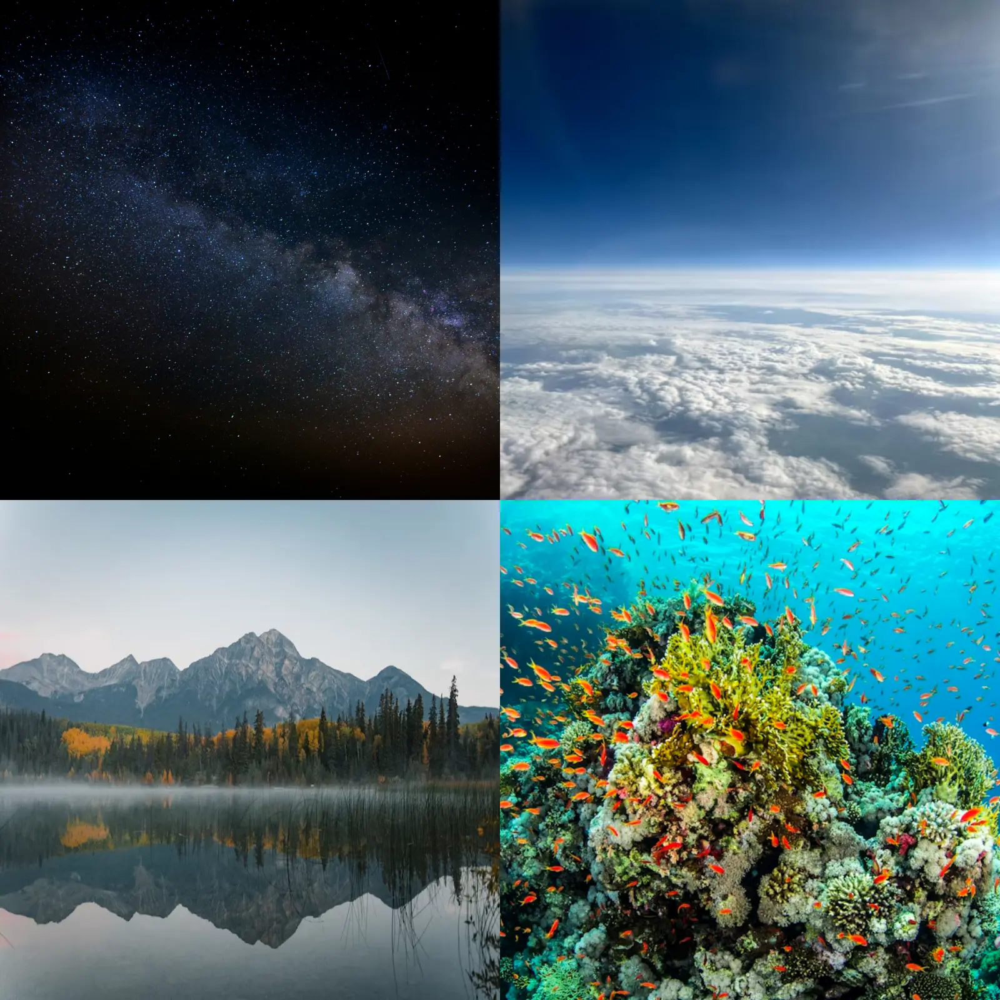

🌌☁️🌊 Cosmo Terra Marina: Exploration Deeper into the Universe
"Exploring the horizons to the deepest mysteries of the universe."
Welcome to the Home Station of Cosmo Terra Marina
This is a digital sanctuary dedicated to unraveling the profound wonders of the Atmosphere and the Deep Cosmos and the Deep Ocean
Discussion Path:
Every celestial frontier is thoroughly analyzed through 4 core sectors:
| Sectors | ☁️ Part 1: Sky | 🚀 Part 2: Space | 🌍 Part 3: Earth | 🌊 Part 4: Ocean |
|---|---|---|---|---|
| 1. Definition | Atmospheric layers and the science behind sky colors. | The vacuum void and the observable boundaries. | Lithospheric layers and tectonic foundations. | Pelagic zones and the chemistry of deep waters. |
| 2. Phenomena | Auroras, solar halos, and fire rainbows. | Supernovas, galactic collisions, and meteor showers. | Volcanic eruptions, earthquakes, and seismic shifts. | Bioluminescence, hydrothermal vents, and tidal surges. |
| 3. Classification | Cloud formations and extreme weather categories. | Planetary classes, constellations, and galaxies. | Mountains, Rivers, and Forest | Coral Reef, Marine Ecosystem |
| 4. Mysteries | - | Black holes, dark matter, and cosmic signals. | Bermuda Triangle and Giant Caverns | Underwater Shipwreck, Underwater Statue, And Deep Sea Particles |
CTM Preview

Figure 1.1: A holistic view of our planetary and cosmic exploration sectors: Sky, Space, Earth, and Ocean.
Cosmos Terra Marina Station is a comprehensive digital sanctuary crafted to bridge the gap between atmospheric science, deep-space mysteries, terrestrial foundations, and oceanic depths. This platform serves as an immersive visual guide, aiming to make complex knowledge across our planet and the universe accessible through structured paths and an ambient environment.